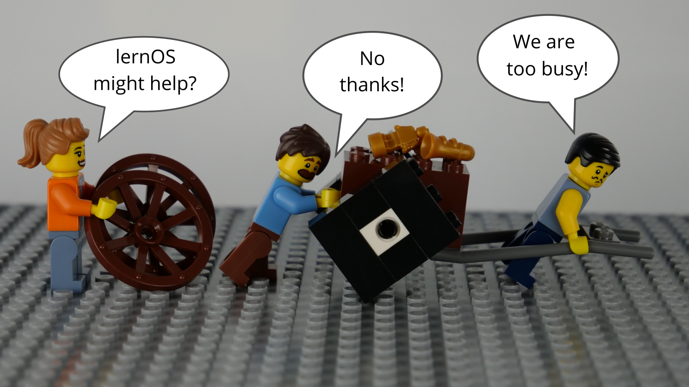

Introduction
We are facing enormous challenges driven by globalization, digitization, and a fast rate of technological and scientific progress. At the same time those changes provide us with a lot of new opportunities for development. The future is uncertain and we cannot predict it. So we need to be open and ready for it (Source: Learning Framework 2030).
To navigate through the so called VUCA world of the 21st century full of volatility, uncertainty, complexity, and ambiguity teenagers, students, professionals, managers, and leaders have to upskill themselves. Everybody has to develop skills like creativity, critical thinking, communication, and collaboration. Digital literacy is important to be able to use digital tools productively. The personal motivation for development should be more than getting a well-paid job or making profit. Everybody should care about the well-being of himself, his friend & families, his communities, and the society. We need to learn what knowledge, skills, mindset, attitudes, values, methods, and tools we need to design and shape a better future together.
lernOS for You can help you to get fit for the 21st century. lernOS helps to organize the daily, weekly, and monthly activities and to learn consciously from every action. It will also promote networking with other people so you don't have to reinvent every wheel and repeat every mistake.
And the best thing is: lernOS is free, open, and easy to understand. Start using it today!
lernOS Sprints: Lifelong Learning in 13 Weeks Timeboxes
lernOS is practiced in timeboxes of 13 weeks called learning sprints like in scrum. Normally sprints run along the quarters of a year but the rhythm can be changed if necessary. A sprint can be done alone (lernOS Soloist), in pairs (lernOS Tandem) or in a group of 4-5 persons (lernOS Circle).

This is what happens during a lernOS sprint:
- Week 0: The sprint planning. Does everybody understand the process? When will the weekly meeting be? Which learning path is chosen? For lernOS tandems and circles: Will the weekly be face-to-face or virtual? Which tools are used for communication and documentation? Is everybody able to use the tools?
- Weeks 1-11 with the Weekly Meeting: It is worked on the objectives and desired results and the progress is critically reflected in the weekly. A learning path suggests exercises, which are called Katas as in CoderDojos. Three learning paths are available for beginners (NOOBs): WOL learning path (open and connected working and learning), OKR learning path (targeted and focused working and learning) and GTD learning path (stress-free and productive working and learning). The recommendation is to select only one learning path per sprint and not to mix the learning paths in tandems or circles. The two pit stops in week 4 and week 8 help to see whether everyone is still on the right track.
- Week 12 with the Retrospective: Review of the final results of the sprint and retrospective of the entire process. For learning tandems and circles: The participants decide whether they want to stay together for another sprint.
At school and university, the pace of learning is determined by school years and semesters. In order to structure the learning afterwards in a self-organized way, the lernOS sprints are planned in extreme cases up to the end of one's life (from the cradle to the cradle), just as Peter Drucker did it.
lernOS Wheel: Mindset, Skillset, and Toolset
Mastering the VUCA world of the 21st century requires to be open for change and new approaches. There are a lot of tools and methods out there. But when one is not open to give it a try, experiment, and fail there will be no success. Like the people with the "square wheels" in the image below we are often too busy to see new opportunities.

Adopting new practices in life, school, or work is not only about using digital tools. To switch from "square wheels" to "round wheels" the personal attitude, values, and skills have also to be taken into account. lernOS calls these three dimensions mindset, skillset, and toolset. To focus only on some dimensions might help. But for the best results all three should be considered in the personal development process.

Mindset: Your Attitude and Values
The mindset can be described as the attitudes and values that lead to actions and visible results. These develop over time and form the culture of organizations and society. When we act in the world we get feedback and learn from it. Over time our mind creates mental models of the world and values that guide our future actions (Boisot, 2004). To successfully navigate the VUCA world these five values are important to be successful (Buhse 2014 & Petry, 2014):
- NETWORKING over isolation
- TRUST over suspiciousness
- OPENNESS over silos
- PARTICIPATION over exclusion
- AGILITY over stability
There is no ranking in the values above but for some people openness seems to be the core value for a 21st century mindset. It means being open to new experiences, knowledge, and ideas as well as sharing knowledge, ideas, and content openly (see also the Open Definition). You should develop an "open first mindset" over time as described in the Open First Manifesto:

ProTip: your mindset is not fixed it can grow over time. Watch Carol Dweck's video on Developing a Growth Mindset to learn more about it.
Skillset: Your Capabilities
Since the 1980s skills like solving problems and interacting with others in creative ways became most important to be successful. These are also skills that can't be easily replaced by automation and artificial intelligence in the future. To get fit for the 21st century you have to train the following skills (Framework for 21st Century Learning, DigiComp 2.1 Framework):
 You can use this table to do a self assessment at the beginning of a lernOS Sprint. The levels 1-5 are according to the Dreyfus model of skill acquisition (1 = Novice, 2 = Advanced Beginner, 3 = Competence, 4 = Proficient, 5 = Expert). Just put your current skill level in the "As-Is" column and your desired skill level in the "To-Be" column. You can then set a focus for your learning activities.
You can use this table to do a self assessment at the beginning of a lernOS Sprint. The levels 1-5 are according to the Dreyfus model of skill acquisition (1 = Novice, 2 = Advanced Beginner, 3 = Competence, 4 = Proficient, 5 = Expert). Just put your current skill level in the "As-Is" column and your desired skill level in the "To-Be" column. You can then set a focus for your learning activities.
| Skill | As-Is | To-Be |
|---|---|---|
| Creativity and Innovation | ||
| Think creatively | ||
| Work creatively with others | ||
| Implement innovations | ||
| Critical Thinking And Problem Solving | ||
| Identifying needs and technological responses | ||
| Reason effectively | ||
| Make judgments and decisions | ||
| Solve technical and non-technical problems | ||
| Creatively using technologies to solve problems | ||
| Communication | ||
| Articulate thoughts and ideas clearly and effectively | ||
| Listen effectively to decipher meaning | ||
| Use communication to inform, instruct, motivate and persuade | ||
| Utilize multiple media and technologies | ||
| Communicate effectively in diverse environments | ||
| Collaboration | ||
| Work effectively and respectfully with diverse teams | ||
| Exercise flexibility and willingness to be helpful in making necessary compromises to accomplish a common goal | ||
| Assume shared responsibility for collaborative work, and value the individual contributions | ||
| Interacting, engaging, sharing, and collaborating through digital technologies | ||
| Managing digital identity | ||
| Digital Literacy | ||
| Browsing, searching, filtering data, information and digital content | ||
| Evaluating and managing data, information and digital content | ||
| Protecting digital devices, personal data and privacy | ||
| Developing, integrating, and re-elaborating digital content | ||
| Handling Copyright and licences | ||
| Programming, Scripting, and Coding |
ProTip: the Mozilla Foundation has developed the Web Literacy Framework with a lot of exercises for developing digital literacy and 21st century skills.
Toolset: Digital Tools You Use
With the emergence of Web 2.0 in 2005 social media entered the stage. Not everybody needs to know all the tools but you should have an overview, know the principles, and choose the right tools for yourself. The conversation prism gives a nice overview of web 2.0 platforms available today:

For a beginner 28 categories and dozens of tools might be overwhelming. Therefore the following list provides an overview of the most relevant tools for learnOS:
- Office & Productivity, e.g. Dropbox, Evernote, Freemind, G Suite, MindManager, Office 365, OneNote, SharePoint, Trello, XMind
- Chat & Messenger, e.g. Google Hangouts Chat, Mattermost, Microsoft Teams, RocketChat, Slack, Telegram, Threema, WeChat, WhatsApp
- Social Networks, e.g. IBM Connections, Jive, LinkedIn, Mastodon, Twitter, Workplace by Facebook, Xing, Yammer
- Videoconference, e.g. Google Hangouts Meet, GoToMeeting, Microsoft Teams, Skype, Skype for Business, WebEx, Zoom
- Weblogs & Wikis, e.g. Confluence, DokuWiki, LinkedIn (Article), MediaWiki, Medium, tumblr, Wikipedia, Wordpress
ProTip: the lernOS Wiki contains a list with links to all the mentioned tools. There will be tutorials on how to use them in the future.
lernOS Circle: The Power Of Peer Support
If you do not want to practice lernOS on your own you can do it in a group of 4-5 people called a learning circle. A circle is a peer support group in which members help each other with feedback, experience, knowledge, and reflection. The circle is a circle of trust: what happens in the circle stays in the circle! The circle members will have a weekly meeting with a standard agenda to structure the learning and development process.

A learning circle meets once a week. Each meeting has a standardized agenda with a check-in, suggested exercises called lernOS Katas (see appendix for the weekly agendas and the exercise descriptions), and a check-out. The timebox for the weekly can be adopted to the needs of the circle members, suggested timeslot is Friday between 11-12am.
ProTip: Kata is just another term for exercise. It comes from practicing programming skills in a peer learning format. Read more about this format at codekata.com.
The weekly meeting can be face-to-face or virtual. The circle has to define tools for communication and documentation between the meetings. The following tools have proven to work in practice:
- Microsoft Teams
- OneNote
- SharePoint
- Skype
- Skype for Business
- Slack
- WebEx
- Yammer
- Zoom
If you have an Enterprise Social Network (ESN) like Jive or Connections in your organization that might also be a good option to support lernOS Circles.
ProTip: To have a good usability choose a tool that supports communication and documentation, e.g. Microsoft Teams. In Microsoft Teams you can use the channel "General" for chat-based communication, the audio/video conferencing feature for virtual meetings and a OneNote Notebook for documentation.